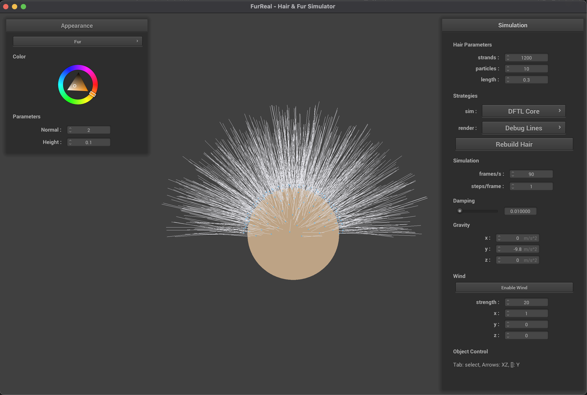
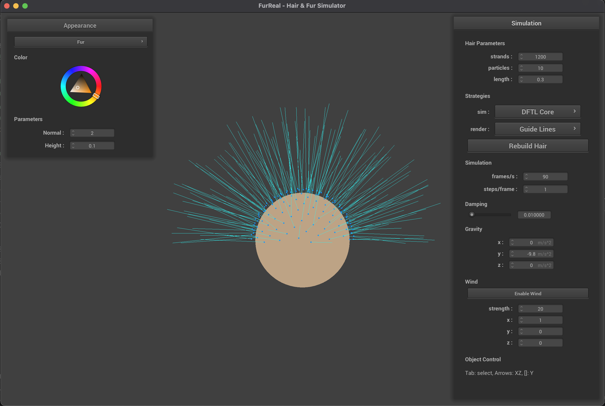
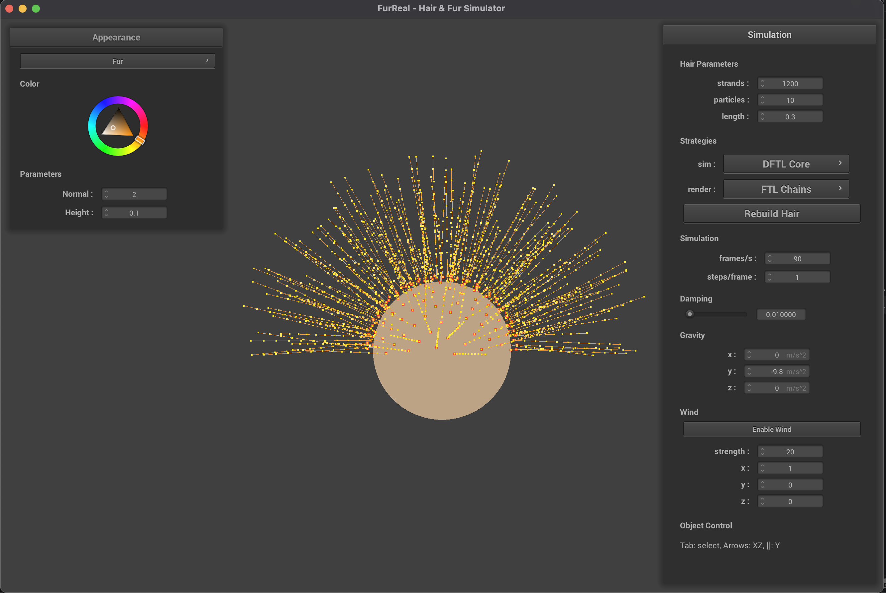
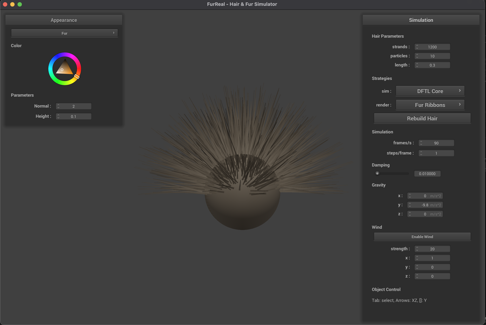
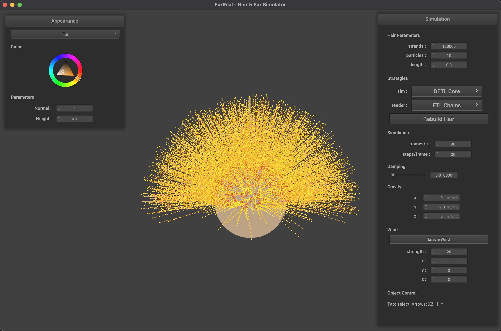
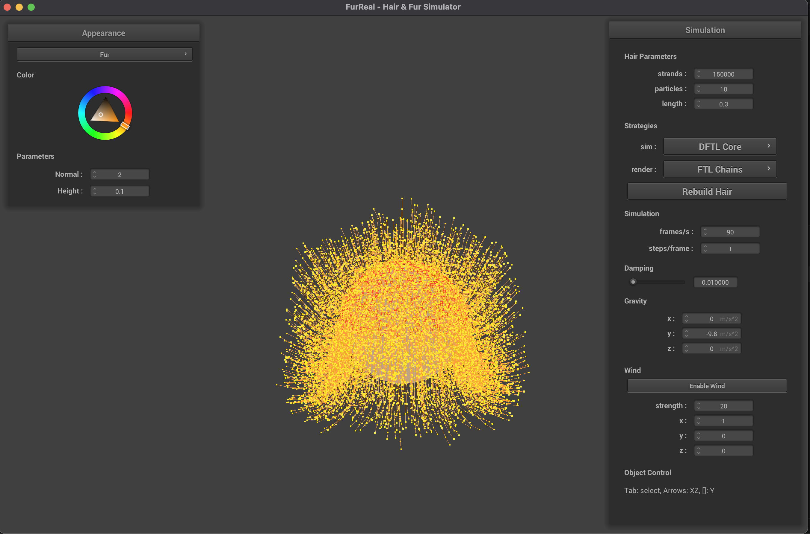
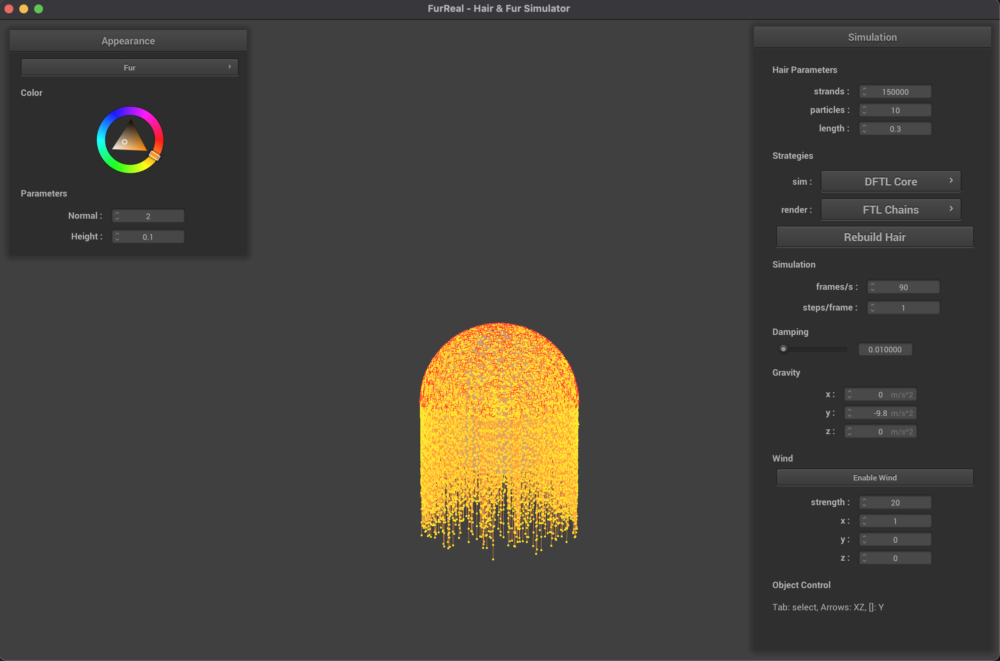

We refactored and adjusted the HW4-style environment (C++ update loop, OpenGL rendering, NanoGUI, scene/collision plumbing) such that our new hair code is runtime-selectable rather than hardcoded. We can switch simulation and rendering strategies during execution, which keeps experiments and future method comparisons cleaner.
For simulation, we currently support DFTL Core and FTL Reference modes. For rendering, we support Debug Lines, Guide Lines, FTL Chains, and Fur Ribbons. We also introduced debug-oriented visualization views that emphasize X/Y/Z behavior to make directionality, motion, and solver artifacts easier to inspect while tuning.
At a systems level, we implemented proxy-root attachment, a guide+follower representation, and dense fur rendering. Roots are anchored through proxy-local coordinates so they move correctly with scene objects; sparse guide strands are simulated while dense followers are interpolated for volume; and fur ribbons provide a fuller final look than simple line rendering.
The baseline now produces stable dense fur on sphere and box scenes, with preserved strand length and reliable root attachment under motion. We are able to run 150K strands on a sphere and box, with maximum relative stretch on the order of 1e-15 to 1e-14 and root drift around 0.0001 in our current configurations. We are also evaluating higher strand counts to understand performance limits and tuning tradeoffs.







We are on track with the proposal baseline: modular runtime switching, attachment, guide/follower interpolation, and a dense fur render path are all in place. The main remaining gaps are post-baseline features from the plan: stronger hair-hair interaction, advanced appearance/shadowing, and better high-density performance at very large strand counts. The updated plan below reflects that scope.
Milestone Slides Link: https://docs.google.com/presentation/d/1M7LG8voJIa6_lTd7aNmjt0dCc2EUJaOYCY2ukDf74C8/edit?usp=sharing
Milestone Video Link: https://drive.google.com/file/d/15RPzFHSTP4IcW4uZCxek3CABYvqokK5J/view?usp=sharing
Webpage Link: https://github.com/StylishSocks/cs184-furreal/blob/main/index.html